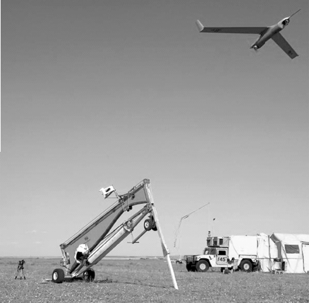
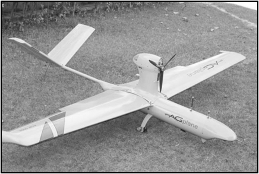

Os VANTs e a
Comunicação Sem Fio
Rayner M. Pires
10 de novembro de 2017Quem sou eu?

-
Bacharel em Ciências da Computação pela UFG2010
-
Mestre em Ciências da Computação pelo ICMC/USP2014
-
Doutorando em Ciências da Computação pelo ICMC/USP2014
Sobre o que é esta palestra?
- Introdução sobre Sistemas com VANTs
- Cenário de comunicação
- Aplicações
- Telemetria
- Pesquisa
O que são VANTs?
| V | eículos |
| A | éreos |
| N | ão |
| T | ripulados |
|  |

|

|
|
|  |

|
- São aeronaves não tripuladas, autônomas ou remotamente pilotadas (RPAs)
- Divergem em tamanho, modo de voo, modo de propulsão, aplicações, capacidades e preço